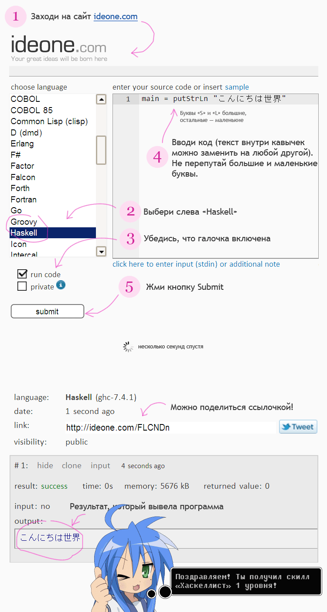

Требуемые знания: достаточно умения включать компьютер и пользоваться браузером. Ноутбук/айпад/планшет/смартфон тоже подходят, если в них есть интернет.
Зачем это нужно? На Haskell (если у тебя хватит терпения пройти все уроки) можно решать как простые, так и сложные математические задачи, например, вычисление чисел Фибоначчи. Ну или можно легко удивить окружающих, бросив небрежно «А, кстати, я иногда пишу код на Хаскелле». Также, Хаскелл — ленивый выразительный язык, и с его помощью ты тоже можешь стать более ленивым и выразительным. Да и просто немного напрячь мозги полезно, согласись?
Как происходит обучение? Просто — читай уроки, смотри картинки, следуй инструкциям, делай задания, задавай вопросы.
Что такое Хаскелл? Язык программирования.
Что такое программа? Это обычный текст, в котором записан набор инструкций, говорящий компьютеру, что ему делать. Программист пишет программу, а компилятор переводит (компилирует) ее в понятные процессору коды, после чего программа запускается и выполняется. Иногда текст программы тоже называют код. Что может делать программа? Да все, что угодно. Профит!
Каким образом пишется программа? Любым, который нравится программисту. Ты можешь использовать блокнот (не советую), а можешь скачать продвинутый редактор вроде Notepad++ или Sublime Text (советую). Продвинутые редакторы подсвечивают код разными цветами и содержат кучу функций для его редактирования. Нам же пока хватит сайта ideone.com . Но ближе к концу курса стоит все же скачать и освоить хотя бы Notepad++.
Поскольку устанавливать всякие программы и, тем более, ковыряться в командной строке (это такое черное окошечко с белыми буквами, где можно писать команды) — слишком сложно для начинающего, мы будем использовать вначале более простой способ запускать свои творения.
Для этого заходи на сайт http://ideone.com/ . Там ты можешь набрать текст программы, нажать кнопку, и увидеть результат его работы. То есть то, что ты туда вбиваешь, отправляется на их сервер и передается компилятору Haskell, код компилируется и выполняется, а тебе выводится результат его работы. Естественно, ты можешь после этого скопировать ссылочку и показать всем друзяшкам из вконтактика, как круто работает твоя программа. Что может быть удобнее? А вот раньше, ребята, не было никаких вконтактиков, компьютеры были размером с грузовик, а программы набивали дырочками на перфокартах
Ideone сломался и не открывается? Попробуй зайти на альтернативный сервис: http://codepad.org/
Ладно, сколько можно читать теорию, давай начинать кодить!
Упс! Ты же, наверно, не знаешь, как это сделать. Держи инструкцию:
Если что-то не работает (или вместо результата ты видишь похожие на заклинания сообщения об ошибках),
перепроверь свою программу. Программирование — точная наука (ой? это наука?)
и нельзя просто так взять и заменить большую букву на маленькую или одинарную кавычку на двойную. Слово
putStrLn пишется с большой «S» и большой «L». Кавычки должны быть двойные (они находятся
на клавиатуре около клавиши Enter):
Если ты мучался-мучался, мучался-мучался и вопреки известной поговорке ничего тк и не получилось, держи ссылочку на работающую программу: http://ideone.com/HoYEms . Можешь взять ее за основу.
В Хаскелл программа состоит из кусочков — функций. Каждая из них делает какую-то свою часть задачи. После того, как функция определена (то есть, после того, как ты ее написал), ее можно вызвать, чтобы она что-то сделала. Функции определяются с помощью такого кода:
functionName = ....
То есть, слева мы пишем имя функции (мы его придумываем сами), потом знак «равно», а справа — что она
делает. main — это особое имя, функция с таким именем вызывается при запуске
программы (и потому она должна в ней обязательно быть). То есть, наша программа состоит из
единственной функции main.
А что такое putStrLn? Это встроенная функция (написанная не нами, а идущая в комплекте с
компилятором), которая выводит переданную ей строку с текстом. Строка, которую надо вывести, идет
сразу после названия putStrLn . Таким образом, мы сделали программу из одной функции,
которая лишь выводит одну строчку. Ну, для начала, думаю, неплохо.
Ты наверно заметил, что слово «функция» встречается в каждом предложении. Неудивительно, ведь Хаскелл — функциональный язык программирования. Больше функций — в следующем уроке!
-----
Куда вводить код? Что надо скачать? Читай первый урок.
Есть вопросы? Задай гуглу или автору.
Нравится урок? Лайкай, репости, приглашай друзей, пости котов и Канако, шли добра, решай задачи, помогай новичкам! Кнопок для лайка нет, кто хочет зарепостить, всегда может сделать это ручками.
Как связаться с автором? Я хочу переодеть его в платье школьницы и жениться на нем. Ящик codedokode (кот) gmail.com ждет ваших писем. А вконтактик и фейсбучек ждут ваших лайков. Но ответ на банальные вопросы лучше искать в Гугле или на stackoverflow.
Я решил задачку!!! Молодец, делай следующий урок
Почему так много рекламы? Всю рекламу на сайте ставит юкоз (бесплатный хостинг же), а не я.
На сайте установлена система Google Analytics (и еще несколько аналогичных систем от юкоза). Данные о твоем IP-адресе, посещаемых страницах, времени посещения отправляются в Google Corporation, США. Хочу знать, кто и зачем сюда заходит. Поверь, другие сайты делают точно так же. Все сайты пишут логи.